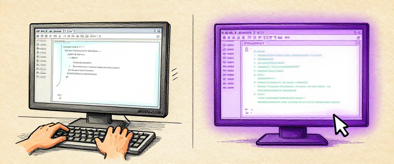
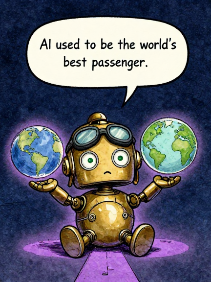
AI used to be the world's best passenger.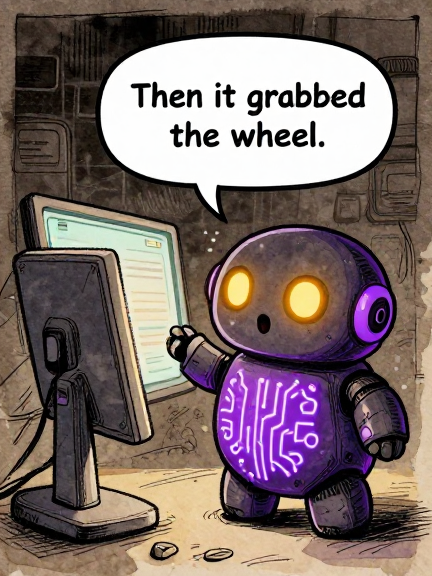
Then it grabbed the wheel.In Issue 7, we watched language models learn to write code. You could type a question into a chat window, and an LLM would hand you a function, a class, an entire module. Extraordinary.
But there was a catch. You still had to copy the code, run it yourself, read the errors, go back to the chat, and ask for a fix. It was like having a brilliant advisor locked in a soundproof room — they could slip you a plan under the door, but you had to do all the running.
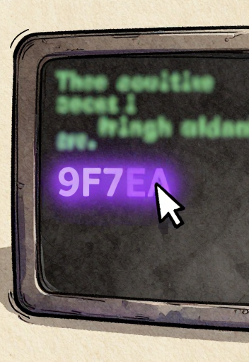
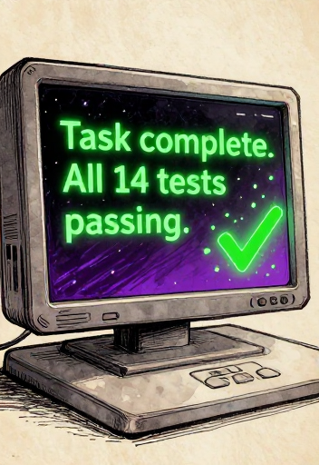
Between 2021 and 2025, that wall came down. AI went from suggesting code to writing, running, testing, debugging, and fixing code — all on its own. The advisor left the room and sat down at the keyboard.
The Four Leaps from autocomplete to autonomous agents
For 80 years, we made computers easier for humans to use. Now we are making computers that use themselves. The shift from “AI writes code” to “AI does the work” is not just a feature upgrade — it is a fundamental change in what a computer can do.
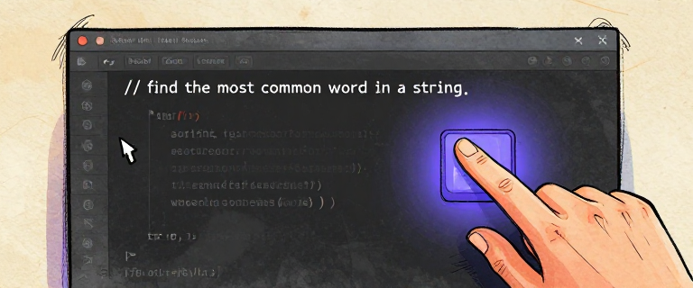
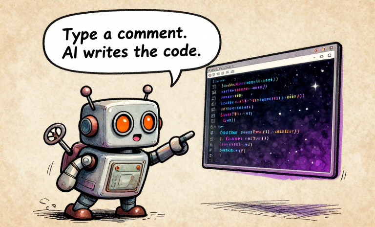
Type a comment. AI writes the code.On June 29, 2021, GitHub announced Copilot as a technical preview. Built on OpenAI Codex, a 12-billion-parameter language model fine-tuned on billions of lines of public code, Copilot predicted not just the next word — but entire functions.
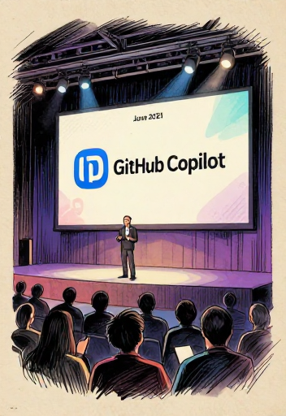
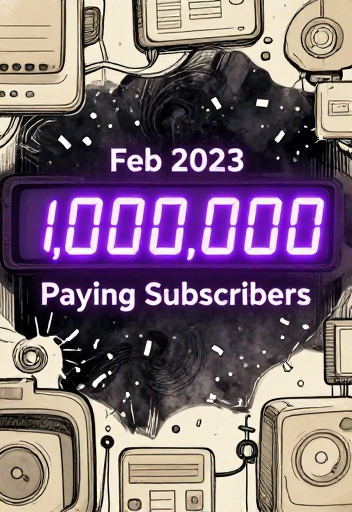
Copilot became generally available on June 21, 2022, at $10/month. By February 2023: over one million paying subscribers. An internal study claimed developers completed tasks 55% faster. Critics noted the study used a simple task — but nobody disputed the feeling. Developers called it a “before and after” moment.
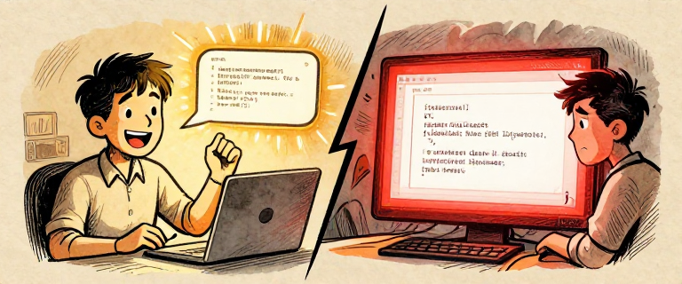
Copilot had been trained on public code, including GPL-licensed code. Lawyer Matthew Butterick filed a class-action lawsuit in November 2022, calling it “software piracy at an unprecedented scale.” The fundamental question: is an AI learning patterns from code the same as copying that code? The legal system is still wrestling with the answer.
How Copilot works: from typing to inline code suggestions
“If you read a thousand cookbooks and then write your own recipe, is that copying? What if your recipe happens to match someone else’s word for word? At what point does ‘learning from’ become ‘copying’?”
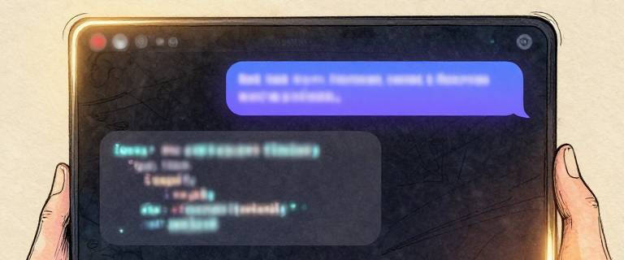
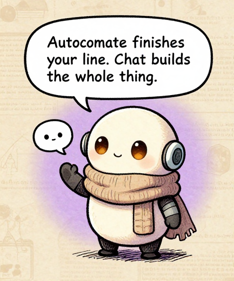
Autocomplete finishes your line. Chat builds the whole thing.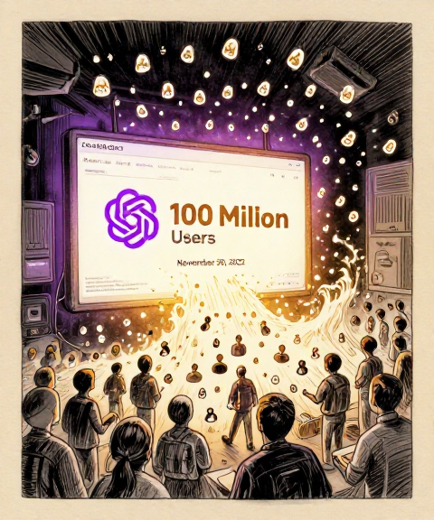
On November 30, 2022, OpenAI launched ChatGPT. It reached 100 million monthly active users by January 2023 — the fastest-growing consumer application in history. Developers discovered it was shockingly good at writing code from plain English descriptions.
When GPT-4 arrived on March 14, 2023, the leap in code quality was dramatic. Claude, from Anthropic — co-founded by Dario Amodei and Daniela Amodei with a safety-first approach — entered the space in March 2023, followed by Claude 2 in July with a 100,000-token context window.
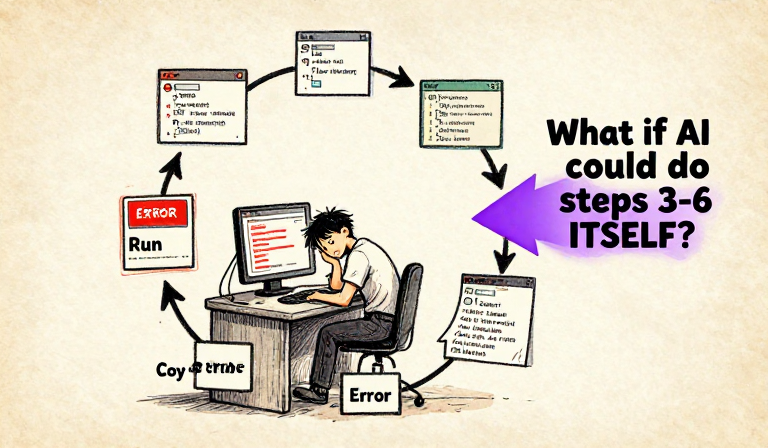
The AI could write code — but it could not run code. It could not see your project. Every interaction followed the same exhausting loop: describe, get code, copy, paste, run, hit error, copy error, go back, get fix, copy again… The human was the bottleneck.
The Copy-Paste Hamster Wheel — humans as the bottleneck between AI and the computer
Chat-based coding was a revolution in capability but not in workflow. The AI got smarter, but the human still did all the running, testing, copying, and pasting. The bottleneck was not intelligence. It was the gap between the AI’s brain and the computer it needed to control.
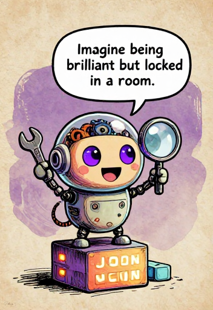
Imagine being brilliant but locked in a room.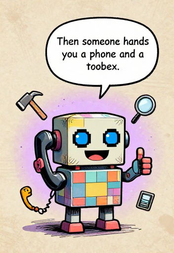
Then someone hands you a phone and a toolbox.The third leap changed everything: tool use. A language model is a text generator. It cannot read files, run commands, or check whether its code works. It is a brain in a jar — brilliant, but disconnected from the world.
Tool use: the model outputs structured JSON, an orchestrator executes real functions, results feed back
In June 2023, OpenAI introduced function calling for GPT-3.5 and GPT-4. The Toolformer paper (Feb 2023) showed LLMs could learn when to use tools. Anthropic introduced tool use for Claude models in early 2024, generally available with Claude 3 in March 2024. Tool use became a universal pattern.
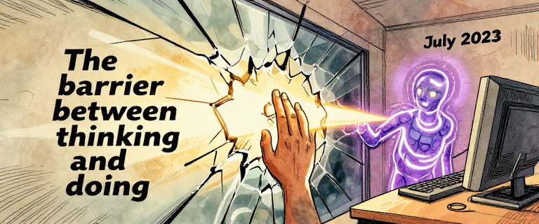
In July 2023, OpenAI released Code Interpreter for ChatGPT. For the first time, a mainstream AI product could write Python code and run it in a sandboxed environment, see the output, and iterate. The wall between “thinking” and “doing” had cracked open.
Auto-GPT: The Mosaic Browser of AI Agents. In March/April 2023, an open-source project called Auto-GPT went explosively viral on GitHub. It tried to chain GPT-4 calls into a fully autonomous agent. In practice, it got stuck in loops and burned through API credits. But it captured the world’s imagination about what autonomous AI could become — the crude but visionary prototype that proved mass appetite for autonomous AI.
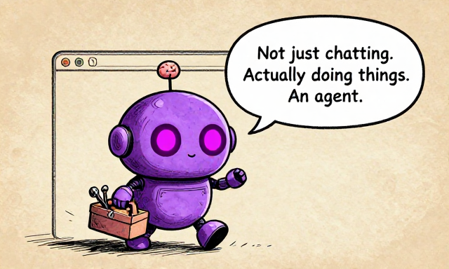
Not just chatting. Actually doing things. An agent.Tool use is the moment AI stopped being an oracle and started being a worker. An oracle answers questions. A worker takes actions. The difference is not intelligence — it is agency.
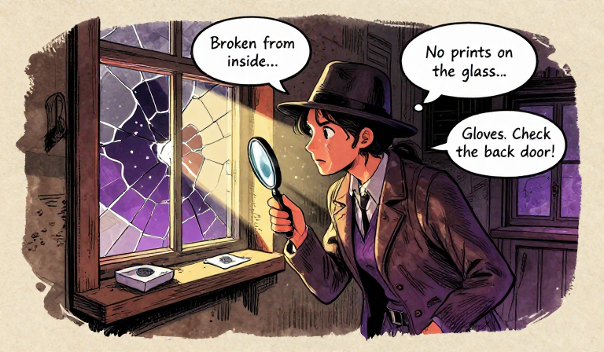
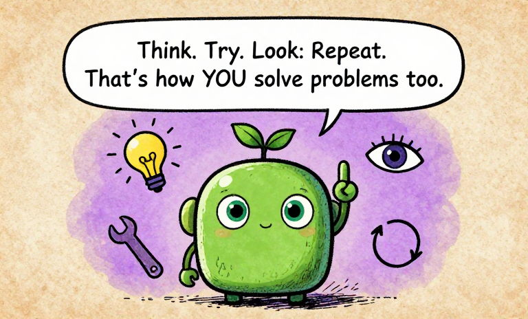
Think. Try. Look. Repeat. That's how YOU solve problems too.Imagine a detective at a crime scene. She thinks: “The window is broken from the inside.” She acts: dusts for fingerprints. She observes: “No prints on the glass.” She thinks again: “So the intruder wore gloves. Let me check the back door.” Think, act, observe, repeat. That is how real problem-solving works.
On October 6, 2022 — nearly two months before ChatGPT launched — Shunyu Yao, a PhD student at Princeton, published the blueprint for every AI agent that followed: “ReAct: Synergizing Reasoning and Acting in Language Models.”
Before ReAct, there were two separate approaches. Chain-of-thought asked the model to “think step by step” — good reasoning, but no real-world actions. Action-only had the model call tools directly without explaining its reasoning — things got done, but the model often took wrong turns. ReAct combined them.
The ReAct loop: Think, Act, Observe — then think again with new information
Three approaches compared: only ReAct combines reasoning with real-world actions
Watch an AI agent think, plan, and recover from mistakes using the ReAct loop — or play the agent yourself!
Open Agent Sandbox →The ReAct pattern is not an AI invention. It is the scientific method, applied to language models. Hypothesize, experiment, observe, revise. The oldest problem-solving strategy in human history, rediscovered in silicon.
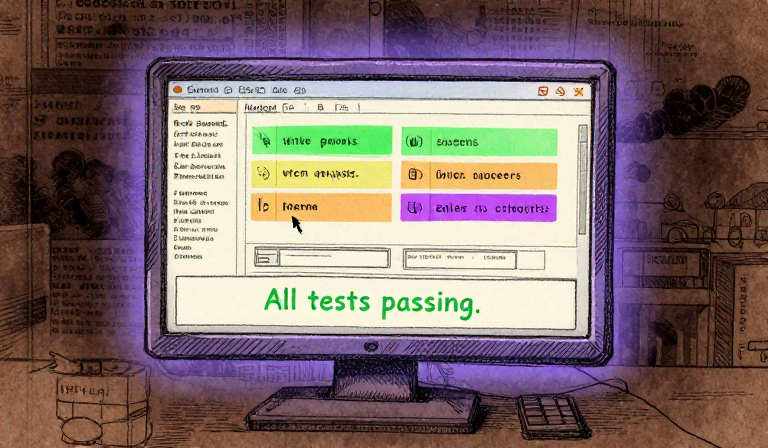
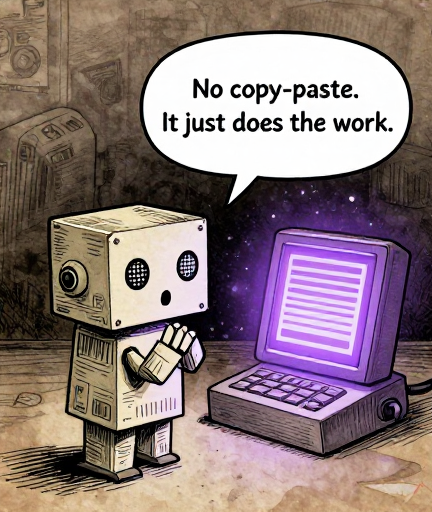
No copy-paste. It just does the work.By 2024-2025, a new category emerged: the autonomous coding agent. You give one a task — “fix the failing tests,” “add dark mode,” “refactor auth” — and it works. Reads your codebase. Edits files. Runs commands. Fixes its own mistakes. All without the human touching the keyboard.
From cookbook to chef: how AI's role in coding evolved
Aider (Paul Gauthier) pioneered the “AI in the terminal” approach. Cursor (Anysphere, 2023) was an AI-native editor forked from VS Code. Devin (Cognition Labs, March 2024) was announced as “the first AI software engineer” — then faced backlash when demo claims were found overstated. Windsurf (Codeium, late 2024) offered integrated agentic flows. Claude Code (Anthropic, early 2025) operates directly in the developer’s terminal.
The spectrum of AI coding tools from autocomplete to fully autonomous agents
SWE-bench: The Reality Check. How do you know if a coding agent actually works? SWE-bench (Carlos Jimenez et al., Princeton, Oct 2023) contains 2,294 real GitHub issues. Early agents solved roughly 10-15%. By late 2024, top agents reached 30-50% on the verified subset. Impressive progress — but a long way from 100%. A useful corrective to the hype.
A crucial difference: where the AI runs. Sandboxed tools run in locked containers — safe, but the AI cannot access your real project. Terminal-based agents run in the user’s actual environment, with real permissions. More capability, but also more responsibility.
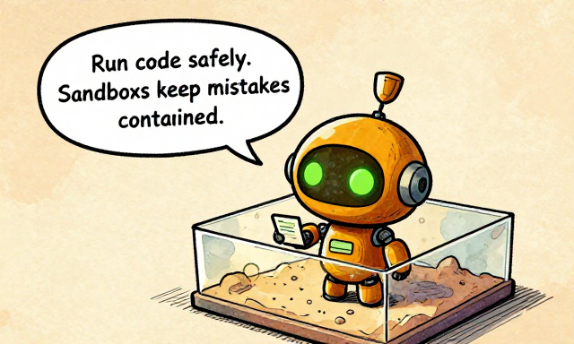
Run code safely. Sandboxes keep mistakes contained.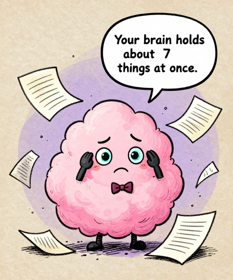
Your brain holds about 7 things at once.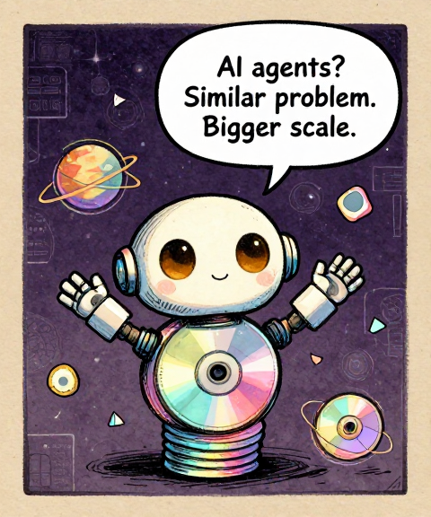
AI agents? Similar problem. Bigger scale.A context window is the maximum amount of text a language model can process in a single interaction. Think of it as the model's working memory — everything it can “see” at once. If information is outside the window, the model cannot access it. It is gone.
Context window growth from GPT-3 to Claude 3 — and why even two novels is not enough
That sounds enormous. Surely 200,000 tokens is enough? Not quite. And the reason is a subtle, well-documented phenomenon that researchers call “Lost in the Middle.”
The U-shaped attention curve: models struggle with information in the middle of their context
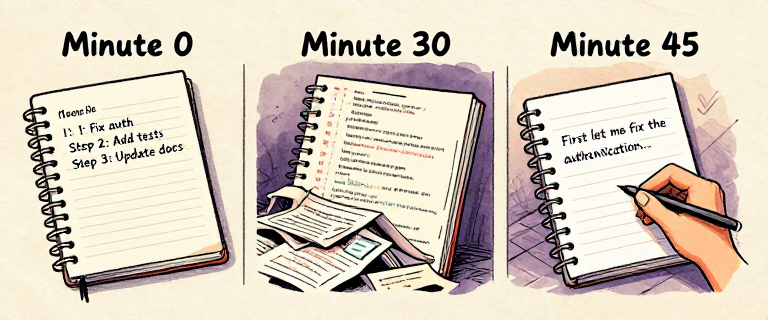
For a coding agent, this creates a slow-motion disaster. The agent starts with a clean, clear context. But as it works — reading files, running commands, analyzing errors — the context fills up. The original plan slides into the foggy middle. The agent may re-do work it already completed, contradict earlier decisions, or “forget” critical constraints.
A context window is like a desk. A bigger desk lets you spread out more documents. But no matter how big the desk, the papers in the center tend to get buried. Making the window bigger does not fix the problem. The issue is not the size of the memory — it is how attention distributes across it.
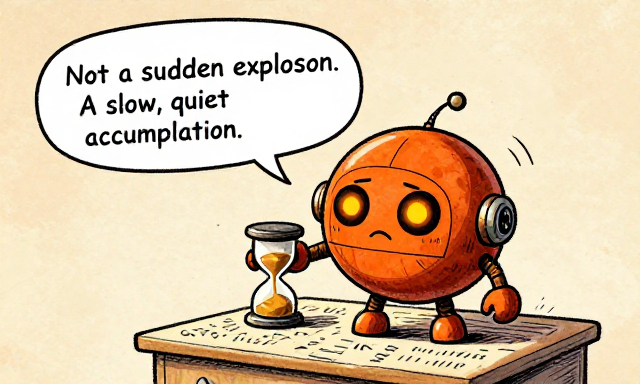
Not a sudden explosion. A slow, quiet accumulation.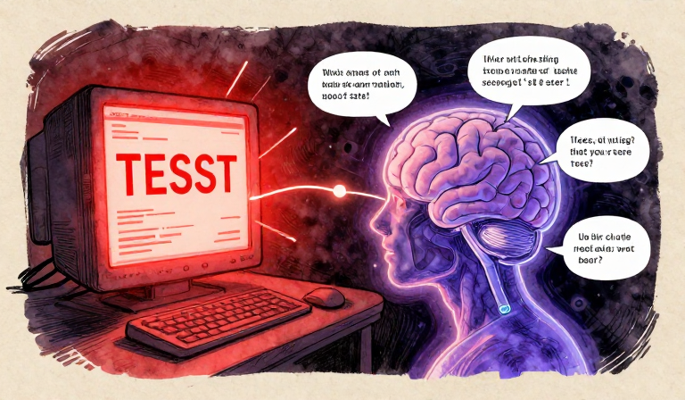
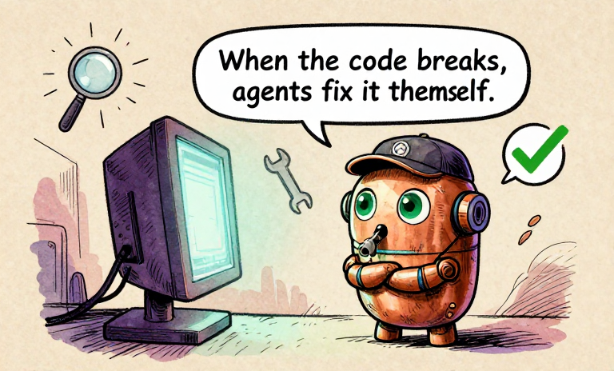
When the code breaks, agents fix it themselves.Here is what separates an agent from a code generator. A code generator writes code. If it fails, you fix it. An agent writes code, runs it, sees it fail, reads the error, reasons about the cause, writes a fix, and runs it again. The AI is active. It fixes its own mistakes.
The error recovery loop: write, run, fail, read error, reason, fix, run again
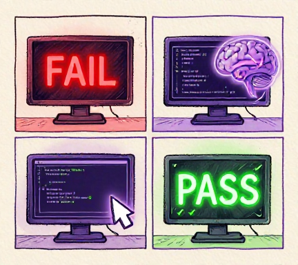
Run 1: Tests fail — 401 Unauthorized.
Agent thinks: “Password comparison is wrong.”
Run 2: Fix introduced ImportError.
Agent thinks: “Missing import. Let me add it.”
Run 3: 4 tests passed, 0 failed.
Three tries. Two different errors. Both fixed without a human touching the keyboard.
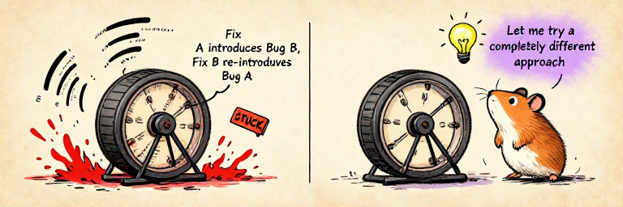
But error recovery is not unlimited. Agents can fall into repair loops — trying a fix that introduces a new error, fixing that but re-introducing the original, oscillating indefinitely. Good systems detect these loops: after three similar failed fixes, the agent steps back and tries a fundamentally different approach.
Agent debugging success rates by error type — from very high (syntax) to low (architecture)
The ability to fail, read the failure, reason about it, and try again is what transforms a code generator into a coding partner. Error recovery is not perfect. But it closes the loop that chat-based coding left open.
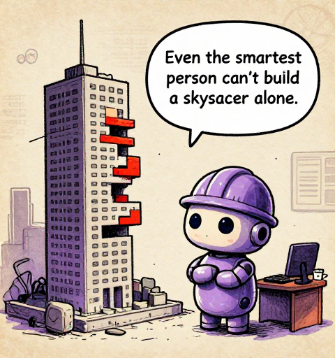
Even the smartest person can't build a skyscraper alone.By late 2024, AI coding agents were genuinely useful. Developers relied on them daily. But a pattern emerged: the harder the task, the more likely the agent was to struggle. Not because the model wasn't smart enough — but because of structural limits that no amount of intelligence could overcome.
The four structural limits that hold back even the most capable single agent
One agent works sequentially (4 hours). Multiple agents work in parallel (1.5 hours). Same task, better architecture.
Vibe Coding: A Cautionary Note. By early 2025, Andrej Karpathy coined the term “vibe coding” — describing what you want in natural language, barely reading the generated code. It captured both the promise and a real peril: what happens when humans stop understanding their own code? Over-reliance on agents risks systems built by AI that no human fully comprehends.
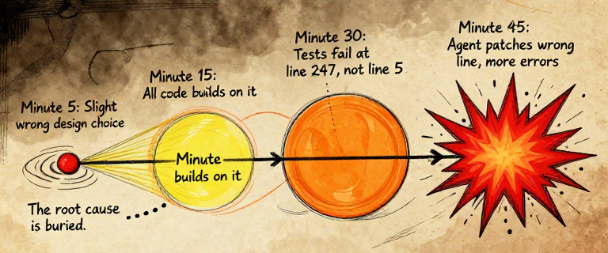
A single agent, no matter how capable, is trying to hold an entire project in one context, work on it sequentially, and maintain perfect recall across thousands of steps. That is not how humans build complex things either. Humans build complex things with teams.
“Think about the hardest project you have ever worked on. Could one person have done it alone, no matter how talented? Or did it require different people with different skills, working in parallel, reviewing each other’s work? Now think about why that same logic applies to AI.”
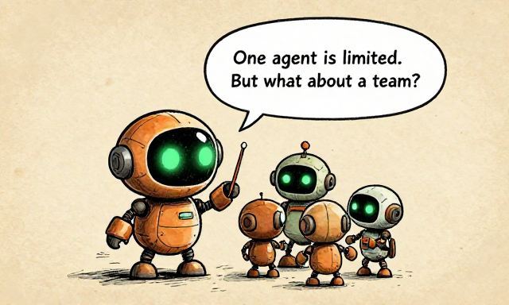
One agent is limited. But what about a team?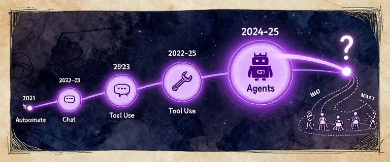
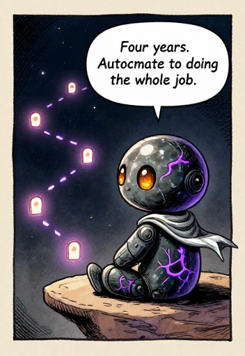
Four years. Autocomplete to doing the whole job.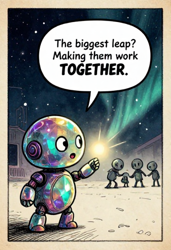
The biggest leap? Making them work TOGETHER.In 2021, Copilot gave developers a taste of AI-assisted coding — magical, but fundamentally autocomplete. In 2022, ChatGPT proved you could describe what you wanted in English and get working code — but the copy-paste cycle was maddening. In 2023, tool use cracked the glass. In 2024-2025, full coding agents put it all together.
The thread through computing history: from Turing's tape to autonomous agents
The solution? The same one humans discovered thousands of years ago. You do not build a cathedral with one brilliant architect. You build it with a team — specialists who each focus on what they know best, coordinated by someone who holds the big picture.
What if you had a researcher agent that digs into documentation, a coder agent that writes the implementation, a tester agent that writes tests, and a reviewer agent that catches bugs — each with a fresh, clean context, each working in parallel, none weighed down by each other’s noise? That is not science fiction. That is what is happening right now.
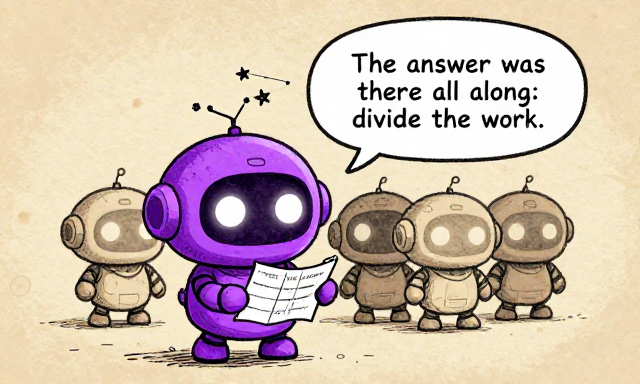
The answer was there all along: divide the work.The progression from autocomplete to agents is not just a story about AI getting smarter. It is a story about AI getting closer to doing real work in the real world. Each leap closed another gap between “thinking about code” and “doing the work.” But the final gap — between a brilliant solo performer and an effective team — is still being closed.
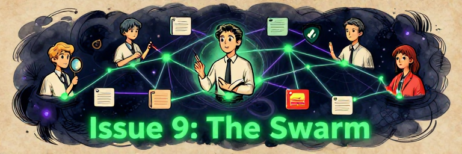